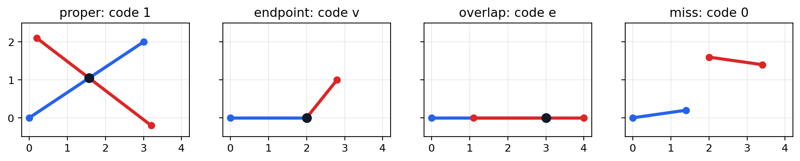
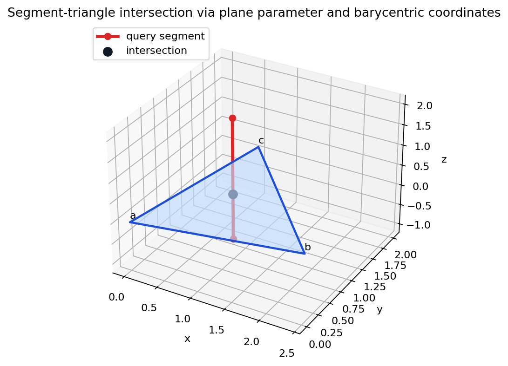
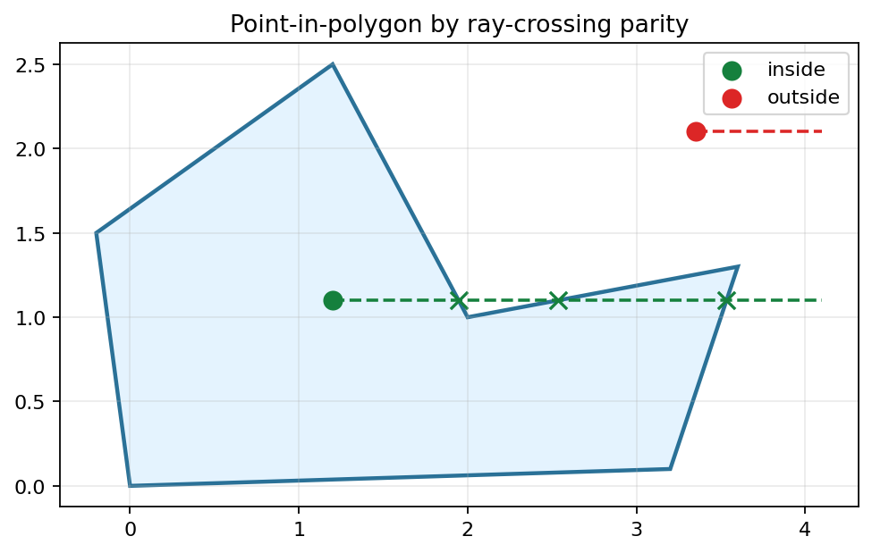
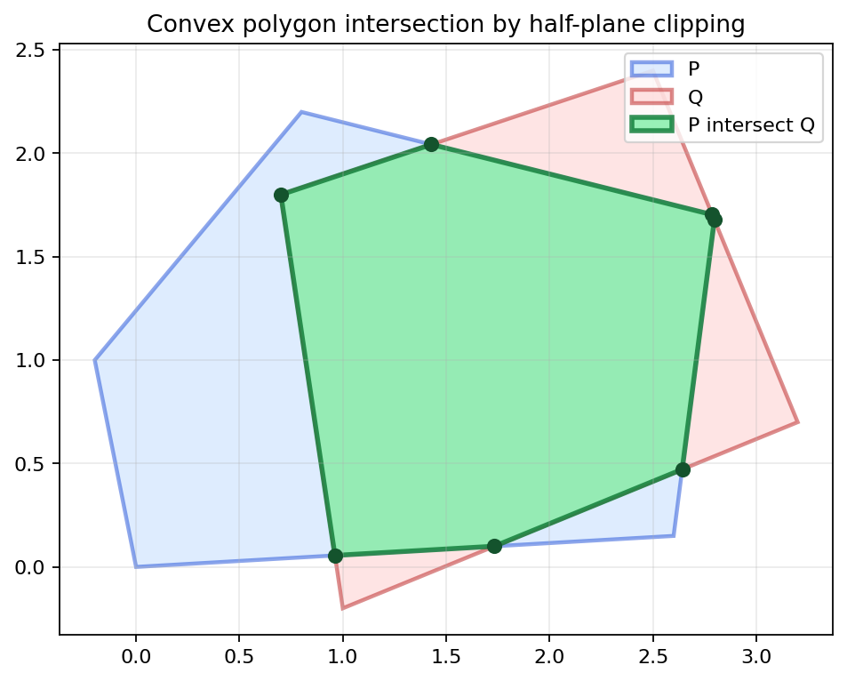
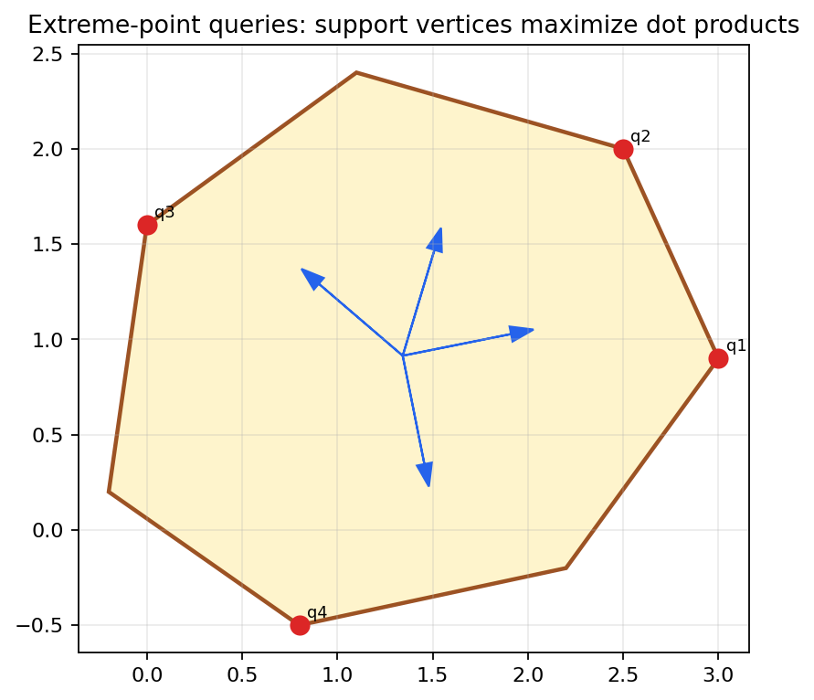
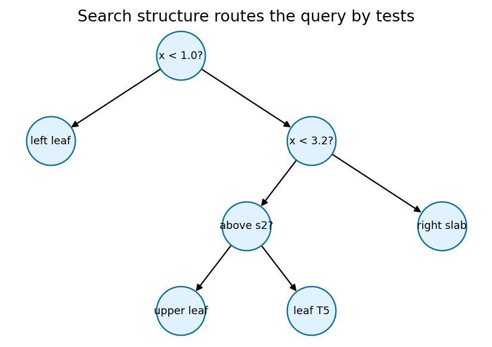
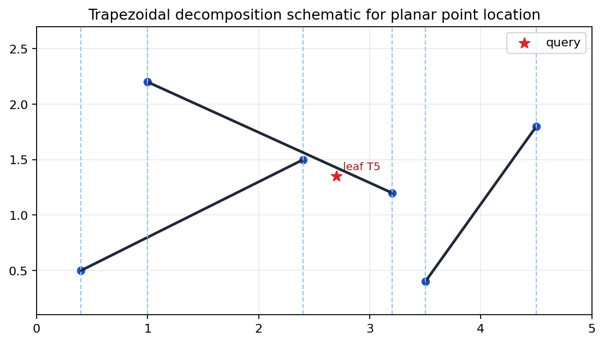

A bridge from local geometric classification to global search structures: segment codes, containment, polygon intersection, sweep status, support queries, hierarchy shrinkage, and point-location search.
Turn predicates into classified events, then organize many events with search structures that answer geometric queries quickly and reproducibly.
Segment cases classified, barycentric coordinates validated, ray parity verified, convex intersection nonempty, supports maximal, and point-location DAG routes to a leaf.
An intersection routine should return the event type, the witness point or interval, and the parameters that certify where the event occurs.
Enough for collision rejection: "do these objects meet?"
Needed for clipping, containment, arrangements, and boundary conventions: "how do they meet?"
Endpoint touches and overlaps are not numerical annoyances; they are topological events that later algorithms consume.
\(a+s(b-a)=c+t(d-c),\quad 0\le s,t\le1\)
The algebra finds one point in \((s,t)\)-space. It is a segment intersection only when that point lies inside the unit square.
A small cross-product denominator makes the solve unstable; the branch should switch to parallel or collinear interval logic.

| Code | Meaning | Witness |
|---|---|---|
| 1 | proper crossing | \(s,t\) both interior |
| v | endpoint touch | shared vertex |
| e | collinear overlap | interval endpoint |
| 0 | miss | parameters outside |
all_segment_cases_classified = true; proper_case_has_parameters_inside_unit_square = true.
When \(\det(b-a,d-c)\) is near zero, the parameter solve should not decide the event alone.
Overlap is a one-dimensional interval problem after the supporting line has been identified.
A closed segment includes endpoints, but a polygon crossing count often treats vertices with special half-open conventions.
Integer predicates avoid roundoff but can overflow; floating predicates need documented tolerances.
The mathematical predicate is exact; the implementation branch is not unless the arithmetic and degeneracy conventions are explicit.

Intersect segment \(q+r(t-q)\) with the supporting plane, then classify the point against the triangle.
Plane parameter \(t=0.6225\); point \((0.85,0.95,0.1325)\).
Barycentric weights \((0.290,0.261,0.449)\) are nonnegative and sum to one.
\(p=\alpha a+\beta b+\gamma c,\quad \alpha+\beta+\gamma=1\)
All three weights are positive.
One zero weight gives an edge; two zero weights give a vertex.
At least one weight is negative, so the point lies across the opposite edge.

A generic ray from a point crosses the boundary an odd number of times for an inside point and an even number for an outside point.
Inside ray has three hits, so parity is odd.
The cube test uses ray hits with faces; inside has one unique crossing and outside has none.

Intersecting a convex polygon with one supporting half-plane preserves convexity, so repeated clipping preserves convexity.
The intersection is nonempty and convex with 7 vertices.
Intersection area is \(3.2319\), and it is not larger than either input polygon.
Move a vertical line through event points; maintain the active segments ordered by their intersection height with the sweep line.
New intersections can be found by checking adjacent active segments after insertions, deletions, and swaps.
Shared endpoints, overlapping segments, and equal x-coordinates must be ordered before the data structure can behave predictably.

\(h_P(u)=\max_{p\in P}\langle u,p\rangle\)
| Direction | Support index | Value |
|---|---|---|
| (1, 0.2) | 3 | 3.18 |
| (0.3, 1) | 4 | 2.75 |
| (-0.7, 0.6) | 6 | 0.96 |
| (0.2, -1) | 1 | 0.66 |
Each level is smaller but still preserves enough adjacency to route an extremal query toward the original polytope.
hierarchy_shrinks_geometrically = true.

Given a planar subdivision and a query point \(q\), return the face, cell, or trapezoid containing \(q\).
| Node | Result | Next |
|---|---|---|
| x < 1.0? | false | x < 3.2? |
| x < 3.2? | true | above s2? |
| above s2? | false | leaf T5 |

Randomized insertion builds trapezoids plus a decision DAG whose internal nodes test endpoints or whether a point lies above a segment.
Each trapezoid has at most two neighbors above and below in the source description, keeping local navigation controlled.
The query is routed to leaf \(T5\) by the stored decision path.
Local predicate signs become classified events; classified events become reliable components in larger search and intersection algorithms.
Segment cases, segment-triangle barycentrics, ray parity, convex clipping, support maxima, hierarchy shrinkage, and point-location routing.
Change one degeneracy convention or query direction, rerun the notebook, and identify which check changes first.